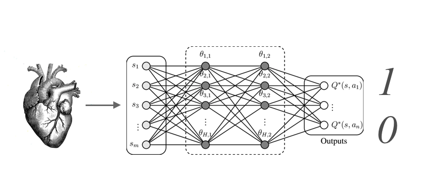
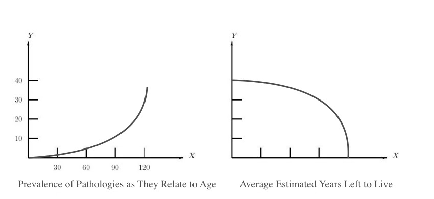

Neural Networks and the Future of AI
Why neural networks will eventually become the basic 0/1 operators of programs — and what that means for the future of cardiology.

Neural networks are becoming the 0,1 operators of programs
With exponential growth in computational capability, entire neural networks will eventually become the basic, though incredibly elastic, 0,1 operators of programs.
Many may be aware that the basics of computing rely on the logical operator of true or false, classically represented as 0 and 1. Fewer may be aware, however, that a neuron, the underlying atomized component of a neural network, through sophisticated probabilistic formulas such as Sigmoid or variations thereof, involves computing to a similarly singular output of 0 or 1. Parallel to that fact the underlying operator of a single neuron regresses to the binary output, I propose that the entirety of a network, of which contains many stacked neurons, either running parallelized or sequential, or even in alternative variations, can so too provide a binary output of 0 or 1. It follows that if a neural network can be used to process an image, or the case of our application in short ultrasound clips, that a network can output a 0 or 1, it can be designed to perform a binary classification from somewhat unstructured or ambiguous input and to arrive at a pathological conclusion, i.e. a normal or abnormal heart. With exponential growth in computational capability, entire neural networks will eventually become the basic, though incredibly elastic, 0,1 operators of programs.
We're all part of the bigger picture
All hearts can be compared as a set of pixels, allowing everyone to participate in a massive statistical comparison for the first time in our history.
Neural networks are designed with many axes of pivot, a freedom that confers particularly well to generalizability. This generalizability is bidirectional, as it allows a broad range and noise of images inputted and the conclusions outputted. It is interesting to consider that the potential for generalizability can also be applied to overcome natural variance that exists on account of biological diversity, such as in the fact that no two persons' heart are identical. This can be accomplished by configuring every heart as a map of pixels bound by the rectangle of the ultrasound image. This means anyone's heart can be captured and represented by pixels configured in that rectangle, and even among a variety of ultrasound manufacturers, any rectangle can be cropped or distorted such that all hearts are represented in a common denominating digitized image.
The power of each heart taking shape in identical form provides the capacity for completely objective comparison. This heart taking form in an image, in actuality a stream of pixel values, can now be passed and sent from machine to machine and uploaded with others to a central server and processed to be stored in a central database queued to be a contribution to a training set of images on a neural network constantly learning. With the capacity for neurons on hardware growing, the capacity for learning can be infinite. The consequence of this is that everyone's heart can now become part of a central intelligence and whether we comply to participate or refuse, if you are at some point in your life analyzed by a medical device that leverages this technology you will be unequivocally complicit in reinforcing the beliefs of the AI.
The iCardio.ai Brain
At iCardio.ai we maintain the belief that if a human can see something in an image, so can a computer.
This arouses excitement around the potential of artificial intelligence. I propose leveraging a concept in deep learning called "pre-training" by exposing a variety of neural networks to ultrasound images. Similarly to existing pre-trained models exposed to open source datasets like a set of hand-drawn numbers, natural images, or even segmentations and their image counterpart, we would provide the iCardio.ai pre-trained deep learning networks. Like a precocious mind, these networks will be already exposed to projections we would expect to have recognized, like the sensitive movements of ventricles and valves or the contouring required to delineate an endocardial border.
We aspire to develop a series of networks trained on the pre-trained models to understand all of echocardiography and in essence we propose developing a fully autonomous, though highly specific, mind — the iCardio.ai Brain.
Objective scoring
Every heart can be given a universal, objective score.
It is accepted among cardiologists that the function of the left ventricle is the broadest indication of a heart's health. The contraction of the left ventricle, whose quality of function is prone to influence by many pathological factors, can vary greatly from person to person. The fraction of blood ejected from the blood pool sitting in the left ventricle, the ejection fraction, is generally accepted as an accurate summary of the function of the heart. While ejection fraction is conventionally referenced as the heart's performance summary, I propose a more comprehensive number can be extrapolated using deep learning. If we compare the function of more than just one chamber, such as what we see in the apical four-chamber perspective of the heart, which exposes a slice of the heart beating with all four chambers in view (the left and right ventricles and atria), we can produce a score that includes consideration of those three additional chambers and other features. While commonly used metrics like ejection fraction or even longitudinal strain can be produced through segmentation of the left ventricular blood pool, even this measurement does not provide a snapshot into all the possible pathologies that lead to cardiac dysfunction. Instead, I propose drawing a numeric conclusion based on a study free of specific pathological assessment. By only taking into consideration the age of the patient, tied to the view of the four chamber view, we associate the function or performance of the heart with age; naturally older hearts will reflect more pathologies, and the mapping of pathologies as they relate to age will fit increasingly well following their natural one-tailed distribution, especially with larger access to data.

Therefore, if we take hundreds of thousands of complete heartbeats (in the apical four chamber view) inputting that as a vector to be processed by a large neural network, the network will be able to predict age with increasing accuracy. The difference between this approach and previous estimations using ejection fraction is that we consider, of course, the function of the four chambers, but also extending to the valves, the features of the muscles of the heart walls, the pericardium, even the image quality (sometimes indicative of information about the constitution of the patient, and therefore other signs of health) all of which can also be included in the analysis. With Moore's law, as processing capability expands, we can include a combination of images, especially one that intersects orthogonally to re-create a 3D representational input of the heart. This would provide a large enough neural network to estimate the relative age of a heart with compelling accuracy.
Predicting mortality
The iCardio.ai Brain will be able to predict how long you have left to live.
If we can use neural networks to estimate the age of a heart, by extension we can also predict how much longer that heart has to live, with respect to the population. This will allow us to score the heart on a scale we are calling the "iCardio.ai score" — a comparable, decisive number on the function of the heart. As more patients are scanned by an ultrasound device that applies the iCardio.ai Brain, the more reliable this score will become. With the iCardio.ai score, we will be able to compare the relative health of one heart against another, as well as monitor the progress of an individual's heart through the ages.